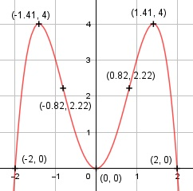

Aufgabe 60 f(x) = -x4 + 4x2 f'(x) = -4x3 + 8x, f''(x) = -12x2 + 8, f'''(x) = -24x Definitionsbereich: -∞ < x < ∞ Wertebereich: -∞ < f(x) ≤ 4 (siehe Extrempunkte) Asymptoten: - Symmetrie: f(-x) = -(-x)4 + (-x)2 = - x4 + x2 = f(x) --> achsensymmetrisch zur y-Achse Nullstellen: -x4 + 4x2 = 0 -x2 * (x2 - 4) = 0 -x2 = 0 |:(-1) x2 = 0 x1,2 = 0 (Berührpunkt, Extrempunkt) x2 - 4 = 0 |+4 x2 = 4 |ⱱ x3,4 = ± 2 N1,2(0|0), N3(2|0), N4(-2|0) Schnittpunkt mit der y-Achse: f(0) = -04 + 4 * 02 = 0 Sy(0|0) Extrempunkte: - 4x3 + 8x = 0 -x * (4x2 - 8) = 0 -x = 0 |:(-1) x1 = 0, f(0) = 0 4x2 - 8 = 0 |+8 4x2 = 8 |:4 x2 = 2 |ⱱ x2,3 = ± 1,41, f(1,41) = -(1,41)4 + 4 * (1,41)2 = 4 f(-1,41) = 4 wegen Achsensymmetrie f''(0) = -12 * 0 + 8 > 0 --> Tiefpunkt (0|0) f''(1,41) = -12 * 1,41 + 8 < 0 --> Hochpunkt (1,41|4) f''(-1,41) = -12 * (-1,41) + 8 < 0 --> Hochpunkt (-1,41|4) Wendepunkte: -12x2 + 8 = 0 |+ (-1) 12x2 - 8 = 0 |+8 12x2 = 8 | :12 x2 = 2/3 |ⱱ x1,2 = ± 0,82, f(0,82) = -0,824 + 4 * 0,822 = 2,22 f(-0,82) = 2,22 wegen Achsensymmetrie f'''(0,82) = -24 * 0,82 ≠ 0 --> Wendepunkt (0,82|2,22) f'''(-0,82) = -24 * (-0,82) ≠ 0 --> Wendepunkt (-0,82|2,22) Graph:
